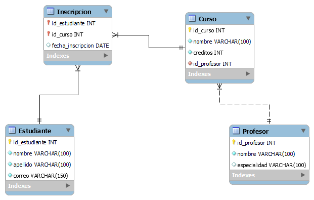
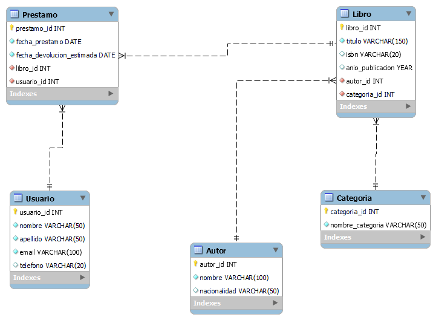
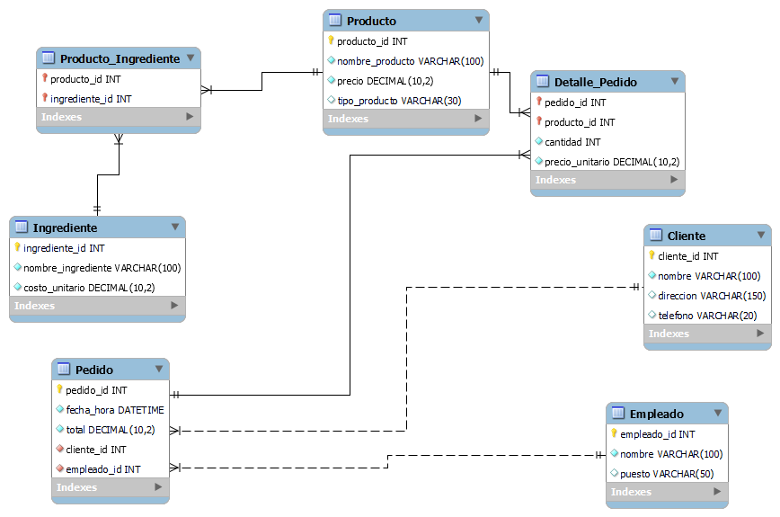

Módulo I: introducción a las bases de datos
Conceptos, ventajas, SGBD, arquitectura de tres niveles, cliente-servidor, usuarios y componentes de un ambiente de base de datos.
Portafolio, semestre II de 2026
| Estudiante | Delis González |
|---|---|
| Profesor | Antonio Caballero |
| Carrera | Licenciatura en Redes Informáticas |
| Universidad | Universidad Tecnológica de Panamá, Centro Regional de Coclé |
| Fecha | Noviembre de 2026 |
Descargar portafolio completo (ZIP)Todos los documentos y diagramas, organizados en carpetas.
Mi nombre es Delis Jesús González Cruz, tengo 24 años y estoy en tercer año de la Licenciatura en Redes Informáticas en la Universidad Tecnológica de Panamá. Entre mis pasatiempos favoritos están ver películas, jugar fútbol y nadar.
Este semestre cursé Fundamentos de Base de Datos con el profesor Antonio Caballero. Trabajé con MySQL: creación de bases y tablas, consultas con SELECT, JOIN y GROUP BY, modelado entidad-relación, vistas, procedimientos almacenados, usuarios y privilegios, y control de concurrencia con respaldo y restauración. También practiqué con bases NoSQL usando MongoDB y Python, y presenté datos con Metabase y con un dashboard de KPIs hecho en Flask.
Aspiro a ser un profesional capacitado en redes informáticas, capaz de diseñar, implementar y administrar infraestructuras de comunicación eficientes y seguras. Saber cómo se guardan, protegen y consultan los datos es parte de ese camino.
Conceptos, ventajas, SGBD, arquitectura de tres niveles, cliente-servidor, usuarios y componentes de un ambiente de base de datos.
Diapositivas del curso: objetivos, evolución de las bases de datos, DBMS y arquitectura cliente-servidor.
Infografía sobre modelado de datos, lenguajes de definición, independencia de datos, usuarios, abstracción y sistema gestor.
Instalación, manejo del servicio y uso básico de MySQL, con la base universidad como práctica.
Evolución de los modelos de datos, tipos de bases NoSQL, NewSQL y una práctica con MongoDB.
Referencia de comandos para bases de datos relacionales con MySQL (65 páginas).
Texto de consulta de la materia (497 páginas).
Base EmpresaEjemplo con empleados, departamentos y proyectos; inserción de datos y consultas con SELECT, filtros, JOIN y GROUP BY.
Esquema con películas, salas, funciones, clientes y boletos; script de creación y consultas de funciones, boletos y ventas por película.
Esquema con artistas, géneros, escenarios, presentaciones y entradas; inserción de datos, consulta con JOIN y verificación en el servidor.
Esquema de una biblioteca generado en MySQL Workbench, con su script de creación de tablas.
Vistas y procedimientos almacenados sobre la base Tienda Online, con la evidencia de cada comando.
Manejo de usuarios, privilegios, roles y revocaciones, con la captura de cada comando.
Transacciones en MySQL (InnoDB) para el control de concurrencia, y respaldo y restauración de tienda_demo con mysqldump.
Tienda en línea con productos y clientes: insertar, consultar, actualizar y eliminar documentos.
Aplicación en Python con operaciones CRUD sobre MongoDB.
Python crea, consulta, actualiza y elimina los productos de un inventario guardado en MongoDB.
Metabase conectado a MySQL y gráficos a partir de vistas de ventas_db: stock, productos más vendidos, ingresos y ventas por cliente.
Puesta en marcha y prueba de un dashboard web de KPIs de proyectos con Chart.js, con exportación a CSV y PDF.



Este curso me mostró que una base de datos es mucho más que tablas con datos: de ella dependen la rapidez de una consulta, la seguridad de la información y la confianza que se puede tener en los datos.
Aprendí a diseñar el modelo entidad-relación y llevarlo a MySQL con claves primarias y foráneas, a consultar con JOIN y GROUP BY, a simplificar consultas repetidas con vistas y procedimientos almacenados, y a controlar quién puede hacer qué con usuarios, roles y privilegios. Con las transacciones, el respaldo y la restauración vi cómo se protege la información cuando hay varios usuarios o cuando algo falla.
También conocí otra forma de trabajar con datos en MongoDB, con documentos en lugar de tablas, y la conecté con Python para crear, consultar, actualizar y eliminar registros. En los informes de Metabase y del dashboard de KPIs vi que los datos cobran sentido cuando se muestran con gráficos claros. Cuando Metabase no lograba conectarse a MySQL 8 tuve que ajustar la opción allowPublicKeyRetrieval, y resolver ese error me recordó que gran parte del trabajo está en configurar bien las conexiones y leer los mensajes de error.
Como estudiante de Redes Informáticas, todo esto se conecta con mi carrera: las redes existen para mover datos, y saber cómo se almacenan, se protegen y se consultan me ayuda a entender mejor los servidores, las aplicaciones y la seguridad que están al final de esas redes. Me llevo de este curso una base sólida para seguir practicando, sobre todo en seguridad y en la administración de servidores de bases de datos.